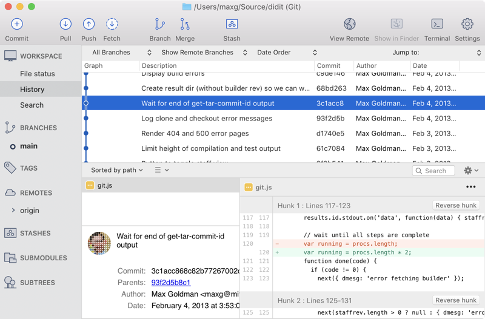
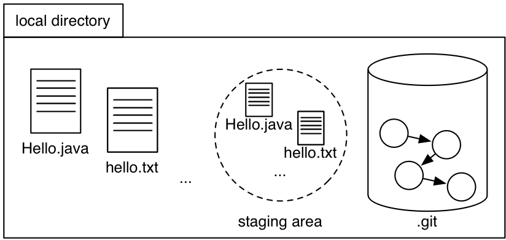
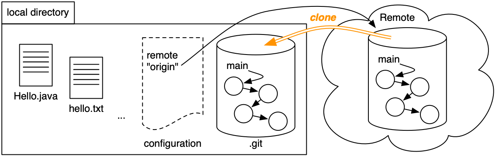

Version Control with Git
Objectives
- Know what version control is and why we use it
- Understand how Git stores version history as a graph
- Practice using Git as a solo programmer
Version control
Version control systems are essential tools of the software engineering world. More or less every project — serious or hobby, open source or proprietary — uses version control. Without version control, coordinating a team of programmers all editing the same project’s code will reach pull-out-your-hair levels of aggravation.
Version control means keeping track of multiple versions of a program or a document. You’ve probably already used some form of version control in your computing experience up to this point:
- Dropbox has a version history, with old versions of files that you save in it
- Google Docs has a version history for a document
- Word processors and editors all have undo, which helps you go back to very recent versions of your editing
You may have even implemented some simple version control yourself, by keeping multiple copies of files with version numbers in the filename. Let’s explore a scenario of doing that in programming, to see what features we want for a good software version control system.
Suppose Alice is working on a problem set by herself.
She starts with one file hello.ts in her pset, which she works on for several days.
At the last minute before she needs to hand in her pset to be graded, she realizes she has made a change that breaks everything. If only she could go back in time and retrieve a past version!
A simple discipline of saving backup files would get the job done.
Alice uses her judgment to decide when she has reached some milestone that justifies saving the code.
She saves the versions of hello.ts as hello.1.ts, hello.2.ts, and hello.ts.
She follows the convention that the most recent version is just hello.ts.
We will call the most recent version the head.
Now when Alice realizes that version 3 is fatally flawed, she can just copy version 2 back into the location for her current code. Disaster averted! But what if version 3 included some changes that were good and some that were bad? Alice can compare the files manually to find the changes, and sort them into good and bad changes. Then she can copy the good changes into version 2.
This is a lot of work, and it’s easy for the human eye to miss changes.
Luckily, there are standard software tools for comparing text; in the UNIX world, one such tool is diff.
A better version control system will make diffs easy to generate.
Alice also wants to be prepared in case her laptop gets run over by a bus, so she saves a backup of her work in the cloud, uploading the contents of her working directory whenever she’s satisfied with its contents.
If her laptop ever gets flattened, Alice can retrieve the backup and resume work on the pset on a fresh machine, retaining the ability to time-travel back to old versions at will.
Furthermore, she can develop her pset on multiple machines, using the cloud provider as a common interchange point. Alice makes some changes on her laptop and uploads them to the cloud. Then she downloads onto her desktop machine at home, does some more work, and uploads the improved code (complete with old file versions) back to the cloud.
If Alice isn’t careful, though, she can run into trouble with this approach.
Imagine that she starts editing hello.ts to create “version 5” on her laptop.
Then she gets distracted and forgets about her changes.
Later, she starts working on a new “version 5” on her desktop machine, including different improvements.
We’ll call these versions “5L” and “5D,” for “laptop” and “desktop.”
When it comes time to upload changes to the cloud, there is an opportunity for a mishap! Alice might copy all her local files into the cloud, causing the cloud to contain version 5D only. Later Alice syncs from the cloud to her laptop, potentially overwriting version 5L, losing the worthwhile changes. What Alice really wants here is a merge, to create a new version based on the two version 5’s.
At this point, considering just the scenario of one programmer working alone, we already have a list of operations that should be supported by a version control scheme:
- reverting to a past version
- comparing two different versions
- pushing full version history to another location
- pulling history back from that location
- merging versions that are offshoots of the same earlier version
Multiple developers
Now let’s add Bob, another developer, into the picture. The picture isn’t too different from what we were just thinking about.
Alice and Bob here are like the two Alices working on different computers. They no longer share a brain, which makes it even more important to follow a strict discipline in pushing to and pulling from the shared cloud server. The two programmers must coordinate on a scheme for coming up with version numbers. Ideally, the scheme allows us to assign clear names to whole sets of files, not just individual files. (Code files often depend on other code files, so thinking about them in isolation has the risk of creating inconsistencies.)
Merely uploading new source files is not a very good way to communicate to others the high-level idea of a set of changes. So let’s add a log that records for each version who wrote it, when it was finalized, and what the changes were, in the form of a short human-authored message.
Pushing another version now gets a bit more complicated, as we need to merge the logs. It’s easier to merge logs than to merge TypeScript files, since logs have a simpler structure – but without tool support, Alice and Bob will still need to merge their logs manually! We also want to enforce consistency between the logs and the actual sets of available files: for each log entry, it should be easy to extract the complete set of files that were current at the time the entry was made.
But with logs, all sorts of useful operations are enabled. We can look at the log for just a particular file: a view of the log restricted to those changes that involved modifying some file. We can also use the log to figure out which change contributed each line of code, or, even better, which person contributed each line, so we know who to complain to when the code doesn’t work. This sort of operation would be tedious to do manually; the automated operation in version control systems is called annotate (or, unfortunately, blame).
Multiple branches
It sometimes makes sense for a subset of the developers to go off and work on a branch, a parallel code universe for, say, experimenting with a new feature. The other developers don’t want to pull in the new feature until it is done, even if several coordinated versions are created in the meantime. Even a single developer can find it useful to create a branch, for the same reasons that Alice was originally using the cloud server despite working alone.
In general, it will be useful to have many shared places for exchanging project state. There may be multiple branch locations at once, each shared by several programmers. With the right set-up, any programmer can pull from or push to any location, creating serious flexibility in cooperation patterns.
The shocking conclusion
Of course, it turns out we haven’t invented anything here: Git does all these things for you, and so do many other version control systems.
Distributed vs. centralized
Traditional centralized version control systems like CVS and Subversion do a subset of the things we’ve imagined above. They support a collaboration graph – who’s sharing what changes with whom – with one primary server, and copies that only communicate with the primary server.
In a centralized system, everyone must share their work to and from the primary repository (often abbreviated to repo). Changes are safely stored in version control if they are in the primary repository, because that’s the only repository.
In contrast, distributed version control systems like Git and Mercurial allow all sorts of different collaboration graphs, where teams and subsets of teams can experiment easily with alternate versions of code and history, merging versions together as they are determined to be good ideas.
In a distributed system, all repositories are created equal, and it’s up to users to assign them different roles. Different users might share their work to and from different repos, and the team must decide what it means for a change to be in version control. Does a change in one programmer’s repo need to be shared with a designated collaborator or server before the rest of the team considers it official?
Version control terminology
- Repository or repo: a local or remote store of the versions in our project
- Working copy: a local, editable copy of our project that we can work on
- File: a single file in our project
- Version or revision: a record of the contents of our project at a point in time
- Change or diff: the difference between two versions
- Head: the current version
Features of a version control system
- Reliable: keep versions around for as long as we need them; allow backups
- Multiple files: track versions of a project, not single files
- Meaningful versions: what were the changes, why were they made?
- Revert: restore old versions, in whole or in part
- Compare versions: to see what changed
- Review history: for the whole project or individual files
- Not just for code: prose, images, …
It should allow multiple people to work together:
- Merge: combine versions that diverged from a common previous version
- Track responsibility: who made that change, who touched that line of code?
- Work in parallel: allow one programmer to work on their own for a while (without giving up version control)
- Work-in-progress: allow multiple programmers to share unfinished work (without disrupting others, without giving up version control)
Git

The version control system we’ll use in 6.102 is Git. It’s powerful and worth learning. But Git’s user interface can be terribly frustrating. What is Git’s user interface?
In 6.102, we will use Git on the command line. The command line is a fact of life, ubiquitous because it is so powerful.
The command line can make it very difficult to see what is going on in your repositories. You may find SourceTree (shown on the right) for Mac & Windows useful. On any platform, gitk can give you a basic Git GUI. Ask Google for other suggestions.
An important note about tools for Git:
Programming editors like VS Code often have built-in support for Git, with helpful icons or highlighting that shows (for example) which files you have changed and which files have not yet been added to the repo. However, we do not recommend using editor menus or plugins to run git commands like add, commit, or push. The course staff may not be able to help you if you run into problems.
GitHub makes desktop apps for Mac and Windows. Because the GitHub app changes how some Git operations work, if you use the GitHub app, course staff will not be able to help you.
Getting started with Git
On the Git website, you can find two particularly useful resources:
- Pro Git documents everything you might need to know about Git.
- The Git command reference can help with the syntax of Git commands.
The command line
One thing that makes learning Git harder for many students is that it’s a command-line program. If you’re not familiar with the command-line, this can be confusing.
A command-line is an interface to your computer, similar to the Mac Finder or Windows Explorer, except that it’s text-based. As the name implies, you interact with it through “commands” — each line of input begins with a command and has zero or more arguments, separated by spaces.
Make sure you’re using the right command line
On MacOS and Linux, open your Terminal application.
On Windows, make sure you open Git Bash.
- Don’t use the Windows Command Prompt; it has a different command syntax, not the Unix shell syntax that is used in Mac and Linux.
- Don’t use the Windows Subsystem for Linux either; although it does use Unix shell syntax, it differs from the Unix shell in some other important ways (like the line-ending convention in text files) that will cause problems for you in this class.
Common commands
You will have to be able to move around on the command line. Here are the most important commands for doing that.
cd(stands for “change directory”)Changes the current directory. If you’re in a directory that has a subdirectory called
hello, thencd hellomoves into that subdirectory.Use
cd ..to move to the parent directory of your current directory.pwd(“print working directory”)Prints out the current directory, if you’re not sure where you are.
On a well-configured system, your current directory is displayed as part of the prompt that the system shows when it’s ready to receive a command. If that’s not the case on your system, ask for help configuring your prompt.
-
Lists the files in the current directory.
Use
ls -lfor extra information (a “long” listing) about the files. Usels -a(stands for “all”) to show hidden files, which are files and subdirectories whose names begin with a period. -
Creates a new directory in the current directory. To create a directory called
goodbye, usemkdir goodbye. -
Use up arrow to put the command you just ran back on the command line. You can now edit that command to fix a typo, or just press enter to run it again.
Use the up and down arrow keys to navigate through your history of commands, so you never have to re-type a long command line.
-
Use
Ctrl+Ato bring your cursor to the beginning of a line orCtrl+Eto bring your cursor to the end of a line. (Home or End may also work, if your keyboard has those keys and your terminal prompt interprets them correctly.)You may find these shortcuts useful for editing long commands, to avoid pressing the left or right arrow keys to move your cursor across the entire command.
-
You may be familiar with
Ctrl+Cfrom 6.101 (formerly 6.009) to stop a running process that has started from the command line. Unsurprisingly, it will be helpful again here, especially when we start deploying small web servers.Ctrl+Chas another use, however! If you have changed your mind after typing a long command into the terminal without pressingEnterorReturn, pressingCtrl+Cwill give you a fresh prompt and discard the previous input, allowing you to cancel a command quickly without holdingBackspace. -
You can use the tab button to autocomplete a file or directory name.
For example, if you want to change your directory to a child directory called source, you can type out
cd son the command line and hit tab, which will autocomplete the command (cd source) if there is only one child directory that starts with s or list out all children directories that start with s.
The Git object graph
That reading introduces the three pieces of a Git repo: .git directory, working directory, and staging area.
All of the operations we do with Git — clone, add, commit, push, log, merge, … — are operations on a graph data structure that stores all of the versions of files in our project, and all the log entries describing those changes.
The Git object graph is stored in the .git directory of your local repository.
Remote repositories also have a copy of the graph: for 6.102, that copy is on github.mit.edu, stored in an IS&T data center somewhere.
Copy an object graph with git clone
How do you get the object graph from github.mit.edu (or any other remote storage) to your local machine in order to start working on the problem set?
git clone copies the graph.
Suppose your username is bitdiddle and you run:
We still haven’t explained what’s in the object graph.
But before we do that, let’s understand step 3 of git clone: check out the current version of the main branch.
The object graph is stored on disk in a convenient and efficient structure for performing Git operations, but not in a format we can easily use.
In Alice’s invented version control scheme, the current version of hello.ts was just called hello.ts because she needed to be able to edit it normally.
In Git, we obtain normal copies of our files by checking them out from the object graph.
These are the files we see and edit in VS Code.
We also decided above that it might be useful to support multiple branches in the version history.
Multiple branches are essential for large teams working on long-term projects.
To keep things simple in 6.102, we will not use branches and we don’t recommend that you create any.
Every 6.102 Git repo comes with a default branch called main, and all of our work will be on the main branch.
(The default branch used to be called master by convention. If you see that in online Git tutorials or Stack Overflow answers, just replace it with main instead.)
So step 2 of git clone gets us an object graph, and step 3 gets us a working directory full of files we can edit, starting from the current version of the project.
Practice with GitStream
This reading includes links to a Git tutor called GitStream. GitStream allows you to practice Git on your machine: for each exercise, you clone a GitStream repository, then follow the instructions on the web page. GitStream will give you feedback in both the terminal and on the web as you complete each exercise.
GitStream will not work with multiple exercise pages open at the same time.
Don’t open exercises in multiple tabs. If an exercise doesn’t work, please close all open GitStream pages and try again.
If you encounter a problem, please ask for help.
git cloneNote that GitStream doesn’t keep track of whether you’ve already done this exercise. To see which GitStream exercises you’ve already done, look at Omnivore.
Get the history of the repository
Let’s finally dive into that object graph!
Clone an example repo with some interesting history:
git clone https://github.com/6031/ex05-hello-git hello-git
Here are the most useful commands:
-
shows a list of all the commits in the repository. It’s an alias for
git logplus a few options, which you created when you followed the Getting Started instructions. -
shows the last commit on the repository. It will show you the commit message as well as all the modifications.
Long output: if git lol or git show generates more output than fits on one page, you will see a colon (:) symbol at the bottom of the screen.
You will not be able to type another command!
Use the arrow keys or Page Up/Page Down to scroll up and down, and quit the output viewer by pressing q.
(You can also press h to see the viewer’s other commands, but scrolling and quitting are the most important to know.)
Commit IDs: every Git commit has a unique ID, the hexadecimal numbers you see in git lol or git show.
The commit ID is a unique cryptographic hash of the contents of that commit.
Every commit, not just within your repository but within the universe of all Git repositories, has a unique ID (with extremely high probability).
You can reference a commit by its ID (usually just by the first few characters).
This is useful with a command like git show, where you can look at a particular commit rather than only the most recent one.
You will also see commits identified by ID in tools like github.mit.edu and Didit.
Here’s the output of git lol for this example repository:
* b0b54b3 (HEAD, origin/main, origin/HEAD, main) Greeting in Java * 3e62e60 Merge |\ | * 6400936 Greeting in Scheme * | 82e049e Greeting in Ruby |/ * 1255f4e Change the greeting * 41c4b8f Initial commit
The history of a Git project is a directed acyclic graph (DAG).
The history graph is the backbone of the full object graph stored in .git, so let’s focus on it for a minute.
Each node in the history graph is a commit a.k.a. version a.k.a. revision of the project: a complete snapshot of all the files in the project at that point in time. Each commit is identified by its commit ID, displayed as a hexadecimal number.
Except for the initial commit, each commit has a pointer to a parent commit.
For example, commit 1255f4e has parent 41c4b8f: this means 41c4b8f happened first, then 1255f4e.
Some commits have the same parent. They are versions that diverged from a common previous version, for example because two developers were working independently.
And a commit can have two parents. This is a version that ties divergent histories back together, for example because those developers then merged their work together again.
A branch — remember main will be our only branch for now — is just a name that points to a commit.
Finally, HEAD points to our current commit — almost. We also need to remember which branch we’re working on. So HEAD points to the current branch, which points to the current commit.
reading exercises
Using commands like git lol, or commands from Pro Git or a tool like SourceTree, answer these questions about the hello-git example repo:
(missing explanation)
(missing explanation)
(missing explanation)
(Stuck? Try looking for options or arguments to git log that can answer these questions.)
Add to the object graph with git commit
How do we add new commits to the history graph? git commit creates a new commit.
In some alternate universe, git commit might create a new commit based on the current contents of your working directory.
So if you edited hello.ts and then did git commit, the snapshot would include your changes.
We’re not in that universe; in our universe, Git uses that third and final piece of the repository: the staging area (a.k.a. the index, which is only a useful name to know because sometimes it shows up in documentation).
The staging area is like a proto-commit, a commit-in-progress.
Here’s how we use the staging area and git add to build up a new snapshot, which we then cast in stone using git commit:
Hover or tap on each step to update the diagram, and to see the output of git status at each step:
- If we haven’t made any changes yet, then the working directory, staging area, and HEAD commit are all identical.
- Make a change to a file.
For example, let’s edit
hello.txt.
Other changes might be creating a new file, or deleting a file. - Stage those changes using
git add. - Create a new commit out of all the staged changes using
git commit.

Get the status of your repository
Git has some nice commands for seeing the status of your repository.
The most important of these is git status.
Run it any time to see which files are:
- untracked (completely new, never before added to Git);
- modified but still unstaged;
- modified and staged. If you
git commit, only staged changes will be included in the commit.
Note that the same file might have both staged and unstaged changes, if you modified the file again after running git add.
When you have unstaged changes, you can see what the changes were (relative to the last commit) by running git diff.
Note that this will not include changes that were staged (but not committed).
You can see uncommitted, staged changes by running git diff --staged.
Use git status frequently to keep track of whether you have no changes, untracked files, unstaged changes, or staged changes; and whether you have new commits in your local repository that haven’t been pushed, as will be discussed next.
reading exercises
Get in the habit of running git status before and after every git command to see what your situation is.
Suppose git status displays the output below.
$ ls Hello.java hello.rb hello.scm hello.txt $ git status On branch main Your branch is up-to-date with 'origin/main'. Changes to be committed: (use "git restore --staged..." to unstage) modified: Hello.java Changes not staged for commit: (use "git add ..." to update what will be committed) (use "git checkout -- ..." to discard changes in working directory) modified: hello.txt Untracked files: (use "git add ..." to include in what will be committed) hello.scm
What does this mean for each of these files in your working directory? Mark all correct answers for each file.
(missing explanation)
(missing explanation)
(missing explanation)
(missing explanation)
You run some git commands, and then git status again.
It now shows this output:
$ git status On branch main Your branch is up-to-date with 'origin/main'. Changes to be committed: (use "git restore --staged..." to unstage) modified: Hello.java modified: hello.scm modified: hello.txt
(missing explanation)
Send & receive object graphs with git push & git pull
We can send new commits to a remote repository using git push:
Hover or tap on each step to update the diagram:
- When we clone a repository, we obtain a copy of the history graph.
Git remembers where we cloned from as a remote repository calledorigin. - Using
git commit, we add new commits to the local history on themainbranch. - To send those changes back to the
originremote, usegit push origin main.

And we receive new commits using git pull.
In addition to fetching new parts of the object graph, git pull also updates the working copy by checking out the latest version (just like git clone checked out a working copy to start with).
If the remote repository and the local repository have both changed, git pull will try to merge those changes together.
Pushing
After you’ve made some commits, you’ll want to push them to a remote repository.
In 6.102, you should have only one remote repository to push to, called origin.
To push to it, you run the command:
The origin in the command specifies that you’re pushing to the origin remote.
By convention, that’s the remote repository you cloned from.
The main refers to the main branch, the default branch in our Git repositories.
We won’t use branches other than main in 6.102.
All our commits will be on main, and that’s the branch we want to push.
Once you run this, you will be prompted for your password and hopefully everything will push. You’ll get a line like this:
a67cc45..b4db9b0 main -> main
GitStream will not work with multiple exercise pages open at the same time.
Don’t open exercises in multiple tabs. If an exercise doesn’t work, please close all open GitStream pages and try again.
If you encounter a problem, please ask for help.